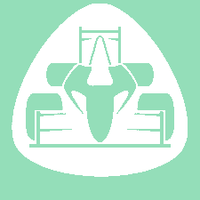

I work on a web application, Ergonnect, in collaboration with Noetik. My job includes both back-end and front-end tasks. On the server-side I worked with C#, MVC5 ASP.NET framework and on the database management I used SSMS. On the client-side I used javascipt with jQuery library, CSS3 and HTML5. In the last six months I am the only one working on this project developing the client's new requests.
I am a member of Prom Racing NTUA FSAE Team and Specifically member of the Electronics Team from 2020-2021 and member of the Driverless Team from 2021-2022. Developed the Telemetry Website with NodeJS server and Grafana for graphs connected with a database in InfluxDb. In the driverless sector, I worked with on the perception of the car. Specifically, developed the cone detection model using Yolov5 and worked on software which processes images to get information about the environment.
